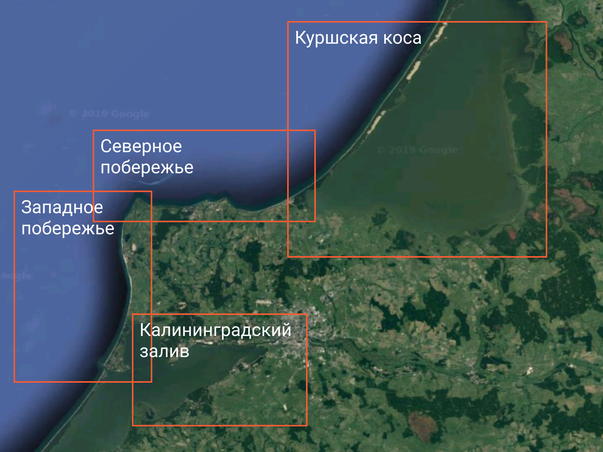

Рома Тимошенко, Влад Рафеев
Россия большая, ее омывает 13 морей, принадлежащих трем океанам. Но в территориальной лотереи, России, увы, достались не все выигрышные билеты для любителей водных видов спорта: 6 морей относятся к холодному Северному Ледовитому, остальные тоже далеко не назовешь райско-теплыми. Балтийское, Баренцево, Белое, Карское, Лаптевых, Восточно-Сибирское, Чукотское, Берингово, Охотское, Японское, Каспийское, Азовское, Чёрное — как говорится воды много, а сёрфа мало. Температуры северных морей не поднимаются выше +10° С даже летом. Серфинг за полярным кругом конечно возможен, но скорее только для избранных. В остальном температура воды приемлема для рядового сёрфера только в Балтийском, Черном, Каспийском, Азовском и Японском морях, а также на Камчатском полуострове, омываемым Тихим океаном.
Жителям Калининградской области посчастливилось жить по соседству с Балтийским морем — самым западным из морей, омывающих берега России. Оно связано с Атлантическим океаном через мелководные Датские проливы и Северное море. Основные черты климата Балтийского моря формируются под влиянием устойчивого переноса умеренного воздуха с Атлантики. Через море часто проходят циклоны, сопровождающиеся западными, юго-западными и северо-западными ветрами, пасмурной погодой и обильными осадками.
Хорошая ветровая статистика позволяет заниматься кайтсерфингом/виндсерфингом круглогодично. Некоторое ослабление наблюдается в летние месяцы.
| Месяц | Количество ветровых дней | Дневная темп. | Ночная темп. |
| Январь |
|
–3 | –3 |
| Февраль | –2 | –3 | |
| Март | 3 | 1 | |
| Апрель | 8 | 5 | |
| Май | 14 | 10 | |
| Июнь | 17 | 13 | |
| Июль | 21 | 17 | |
| Август | 20 | 17 | |
| Сентябрь | 16 | 14 | |
| Октябрь | 10 | 9 | |
| Ноябрь | 6 | 6 | |
| Декабрь | 1 | 1 |
Балтийское море всегда в движении, часто штормит.
В соответствии с 20-летними наблюдениями с опорных станций Ристна (в северной части) и Балтийск (южная часть, Калининградская область) приводится следующая статистика преобладающих штормовых направлений:
В следующей таблице приведена помесячная статистика с преобладанием штормовых циклонов (скорость ветра более 12 м/с):
Таким образом, вероятность шторма З, С-З, Ю-З направлений максимальна с сентября по январь. Также случаются штормы в летний период, обусловленные сильными антициклонами, но реже.
Основные «условные» районы по ветровым направлениям и волновым предпочтениям. Продвинутые кайтеры, любители волн и морской воды предпочитают морское побережье. Ученики и новички, любители фристайла катаются на заливах.
Калининградский залив. Здесь расположен знаменитый КБ (Кайтбич) 1, где зародился кайтсерфинг в регионе — самый популярный кайтспот. С мая по октябрь несколько кайт-школ ведут здесь обучение, федерация водных видов спорта проводят соревнования по фристайлу и курс-рейсу, отмечаются открытие и закрытие сезона. Песчаная коса с радиусом почти 180° и 50-ти метровая отмель являются хорошими условиями для безопасного обучения и кайтсерфинга. Эффект Вентури усиливает ветер на Кайтбиче на 1-2 м/с, обычно здесь дует сильнее всего региона.
Также по соседству с КБ расположен яхтклуб 2, располагающий большой инфраструктурой: прокат виндсерф оборудования, школа, мастерская. Немного ближе к городу в поселке Дельфин есть отличное место в восточной бухте, но спот работает только при западном ветре. На другой стороне Калининградского залива в бухте Приморская есть спот по редкое ЮВ направление.
Помимо кайтсерфинга и виндсерфинга, развивающегося семимильными шагами и насчитывающего более 300 человек, большую популярность приобретают и другие водные виды спорта: классический серфинг, сап-серфинг, бодибординг. А эти виды спорта требуют наличия хорошей морской волны, которая у нас в регионе бывает часто.
Северное побережье. Именно здесь споты принимают на себя сокрушительные С-З штормы Балтики, особенно в районе Зеленоградской бухты. После шторма сюда подходит хороший свелл, пригодный для катания на серф- и сап-бордах. Основные споты северной береговой линии:
Лучшие направления для этих мест: З, С-З, С-В, В. Наилучшие волны приходят при движении ветра и волны по касательной к берегу, в начале шторма. При северном ветре будут сложности с волнорезами, кроме Куликово, где их нет. При западном ветре можно сделать даунвинд по традиционному направлению п. Малиновка — п. Лесное, но маршрут не для новичков, так как встречается много волнорезов и других подводных опасностей. Из Калининграда до Зеленоградска можно комфортно и быстро добраться по трассе «Приморское кольцо», в среднем 15 мин.
На «Амбаре» 3 ломаются самые красивые волны благодаря правильной форме песчаного дна. Но частые волнорезы, узкая полоска пляжа, камни в воде и толпы отдыхающих туристов делают этот спот пригодным только для уверенных в себе кайтеров. Также на этом споте любят кататься сёрферы, но сильный ветер их разгоняет. Рядом есть платная парковка, несколько неплохих кафе и променад.
В Малиновке 4 волны чуть хуже, но много места для запуска, почти нет волнорезов. Из опасностей — каменные сваи в некоторых местах пляжа.
Добраться до Куликово 5 не так просто из-за плохой дороги. На споте отсутствует какая-либо инфраструктура.
В Пионерский 6 при сильном С-З ветре случаются пологие волны с большим периодом, возле захода в порт. Правда часто на этом споте ветра бывает маловато.
Также хороший серф может получиться в пос. Заостровье (мыс. Гвардейский), т.к. его каменистое дно служит в роли барьерного рифа. Но забудьте здесь про кайтсерфинг, площадки для запуска нет.
Западное побережье. Споты славятся своей безлюдностью и широкими пляжами. По всей береговой линии вы не встретите ни одного волнореза и др. подводных препятствий от Балтийска до мыса Таран. Основные споты в этом регионе:
Самая западная точка РФ – Балтийск 7. Бесспорно самые большие и ровные волны именно здесь. Но спот работает только при сильном ЮЗ, ЮЮЗ иди ЗЮЗ, что бывает нечасто, случается в основном в осенне-зимний период. Здесь наблюдаются сильные разрывные течения в районе мола, что делает спот крайне опасным для классического серфинга. Обычно в Балтийске дует меньше, чем на остальных спотах региона на 1-2 м/с.
Если нужно настоящее приключение, то отправляетесь в пос. Донское (мыс Таран), где вы встретите высокие обрывистые берега и нетронутый человеком шикарный пляж. От места парковки до пляжа спускаться около 30 мин.
Самым популярным местом выходного дня когда-то был спот Янтарный (Галера), где широкий пляж в 150 метров готов вместить сотню кайтеров и виндсерферов. Особенностью места является наличие прямо на пляже широкого карьера, что позволяет кататься и на волнах и по ровной воде. Качество волны среднее: волны, как правило, большие, но хаотичные. Хотя при параллельных направлениях иногда встречается правильный прибой. Немного южнее Янтарного есть спот Поваровка — отличное место для поездки с ночевкой большой компанией. Добраться можно только на внедорожнике. Во всем остальном — тоже же самое что и Янтарный. Прямо посередине между Янтарным и Балтийском расположено загадочное место Хмелевка. По сути это испытательный полигон Министерства обороны, где нередко в воде можно встретить БТР. Место военными подобрано с учетом большой морской отмели вблизи побережья, что создает ровный прибой при Ю-З ветре. Не слышал что бы туда подъезжали на машинах, только во время даунвиндов, как промежуточный пункт.
Куршская коса. Национальный заповедник «Куршская коса» позволяет ловить ветер всех направлений со стороны моря или со стороны Куршского залива. Залив мелкий и практически пресноводный, не является судоходным, средняя глубина 3,5 метра. Летом залив прогревается до 25° C, при южных термическим ветрах можно кататься без гидрокостюма. Отличное место для новичков и любителей фристайла. Со стороны залива можно выделить 4 спота:
Эти споты находятся в живописных местах, имеют хорошие подъездые пути и условия для досуга. Холодной зимой залив замерзает и дает возможности для сноукайтинга. Въезд на Косу платный.
Споты Куршской косы со стороны Балтийского моря:
При западном направлении ветра особенной популярностью служит маршрут пос. Лесное — пос. Морское (даунвинд), протяженностью 40 км. При северных направлениях можно повторить маршрут в обратном направлении. Споты Куршской косы живописны и безопасны, там нет волнорезов и подводных валунов.